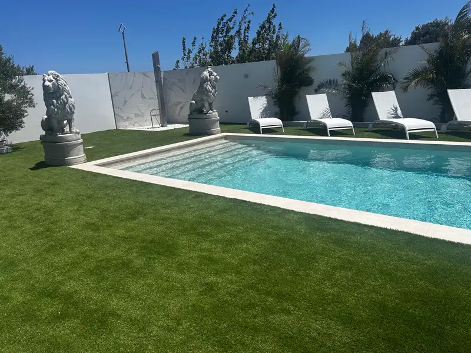
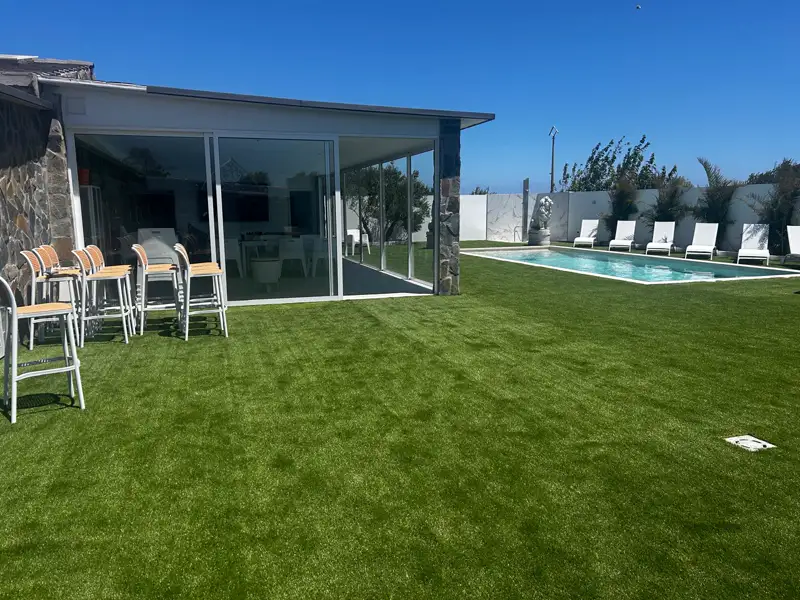
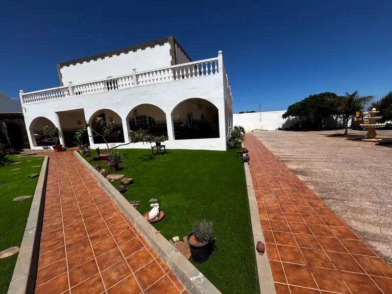
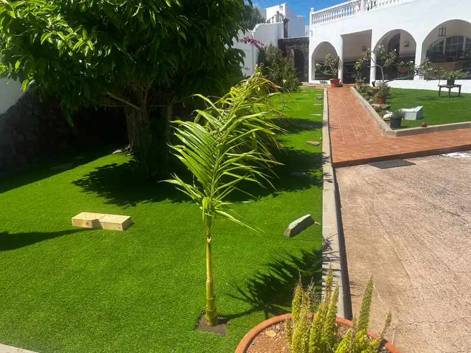
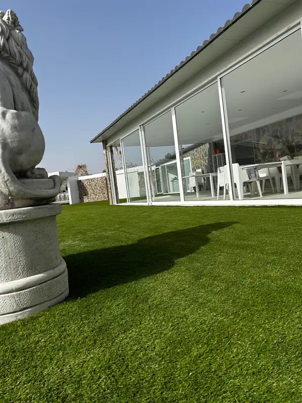
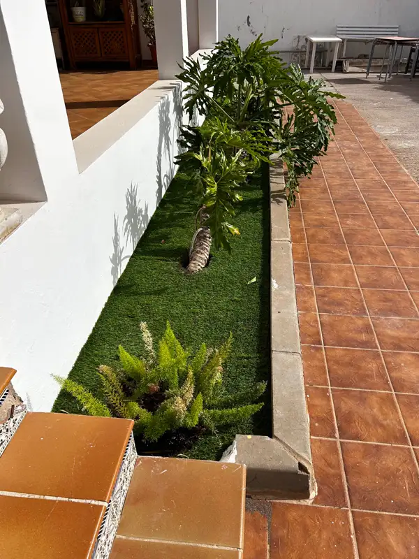
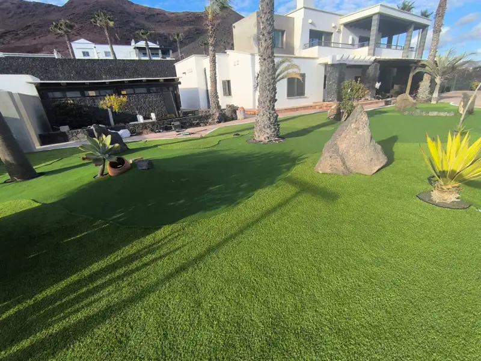
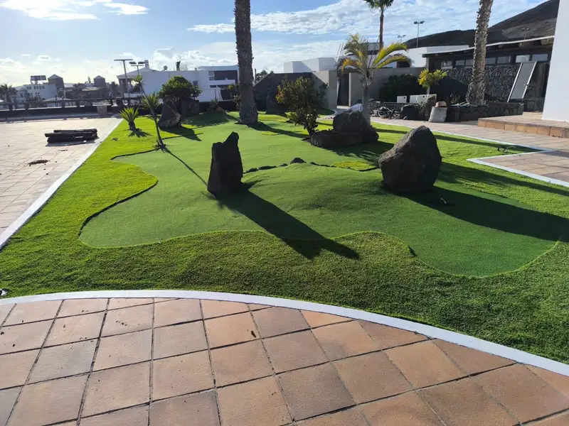
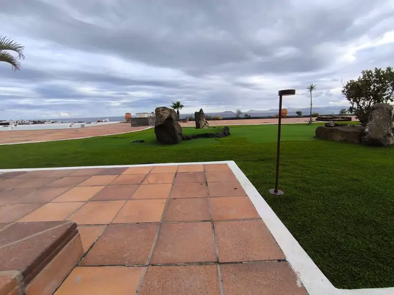
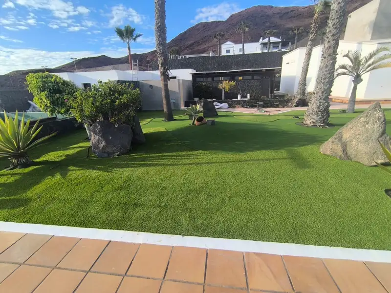

Césped Artificial en Las Palmas de Gran Canaria
Instalamos césped artificial en terrazas, azoteas, patios, jardines, piscinas y comunidades de toda la ciudad, de Vegueta a Tamaraceite. Equipo propio, visita técnica gratis y presupuesto en 24 horas.
Verde todo el año, sin regar
En Las Palmas de Gran Canaria la mayoría de las viviendas son pisos con terraza, áticos con azotea o casas con un patio pequeño. Son espacios donde el césped natural cuesta mantener: mucho sol, poco suelo, viento y agua cara. El césped artificial resuelve todo eso: está verde los 365 días del año, no necesita riego ni corte y convierte cualquier rincón en una zona para disfrutar.
En Apavi Green somos instaladores con equipo propio en Gran Canaria. Nos encargamos de todo: retirada del suelo anterior, preparación de la base, colocación y remates. Si ya tienes un césped viejo, con el Plan Renove lo retiramos sin coste al instalar el nuevo.
Para cada espacio de tu casa o negocio
Césped artificial que hemos instalado
Algunos de nuestros trabajos recientes: el jardín y la zona de piscina de una casa en Carrizal, los jardines de un hotel en Meloneras, con una zona tipo green de golf, y las zonas verdes de un paseo marítimo en Lanzarote. Te contamos paso a paso cómo hicimos el jardín de Carrizal.










Preparado para el sol, el viento y el salitre
Las Palmas de Gran Canaria tiene muchas horas de sol, viento alisio y, en barrios cercanos al mar como La Isleta, Guanarteme o la zona de Las Canteras, ambiente salino. Por eso trabajamos con césped de fibras con protección UV, que mantiene el color con el sol, y con base drenante para que el agua de lluvia o de limpieza no se quede encharcada.
En terrazas y azoteas expuestas al viento reforzamos la fijación perimetral. Y para quitar el salitre y el polvo basta con un aclarado con agua de vez en cuando.
En todos los distritos de la ciudad
Vegueta, Cono Sur y Tafira
Casas con patio en Vegueta y San Juan, y viviendas con jardín en Tafira y Monte Lentiscal.
Centro
Terrazas y áticos en Triana, Arenales, Alcaravaneras y Ciudad Jardín.
Isleta, Puerto y Guanarteme
Azoteas y terrazas junto al mar, donde el sol y el salitre exigen materiales de calidad.
Ciudad Alta
Escaleritas, Schamann, Siete Palmas y alrededores: terrazas de piso y zonas comunes de comunidades.
Tamaraceite, San Lorenzo y Tenoya
Chalés y casas con jardín, patios grandes y zonas de piscina.
Ventajas comprobadas
Proceso paso a paso
¿Cuánto cuesta el césped artificial?
El precio depende sobre todo de la gama de césped (altura, densidad y uso previsto), de los metros cuadrados y del estado del suelo: no cuesta lo mismo instalar sobre una terraza de baldosa que sobre tierra que hay que preparar.
Si vas a renovar un césped antiguo, el Plan Renove incluye la retirada del césped viejo, la malla antihierba y la regularización del suelo, desde 23,50 €/m².
Tienes los rangos de precio por gama en nuestra guía de precios del césped artificial en Canarias. Para tu caso concreto, hacemos la visita gratis y te enviamos un presupuesto detallado en 24 horas.
Todo lo que necesitas saber
Más ideas para tu espacio
¿Listo para tu terraza verde?
Pide tu presupuesto de césped artificial en Las Palmas de Gran Canaria y te llamamos en menos de 24 horas.